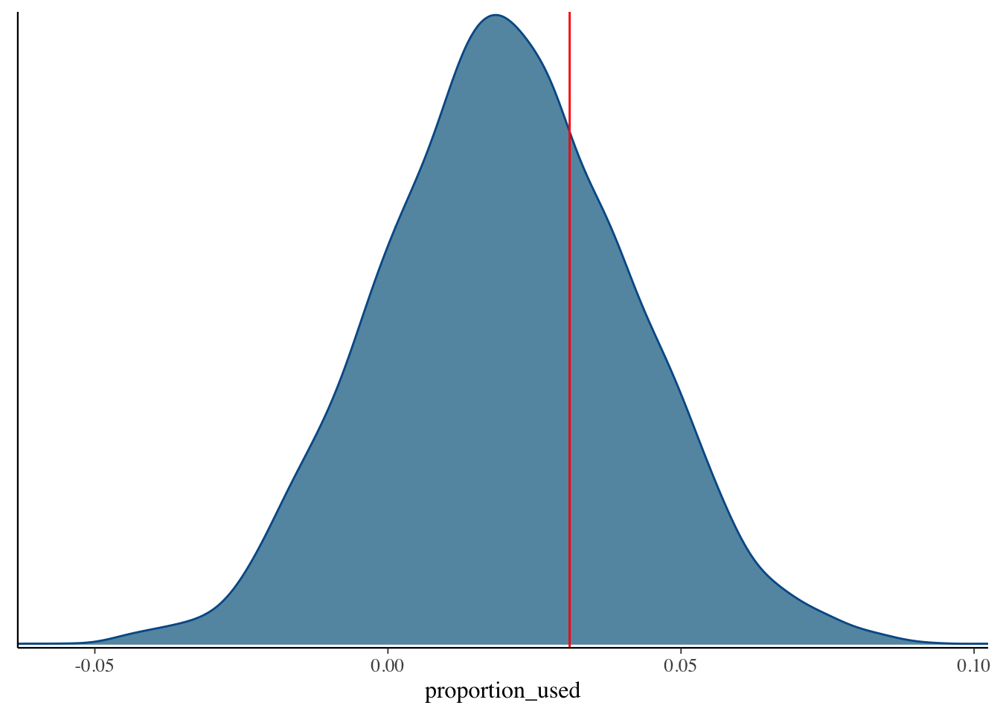
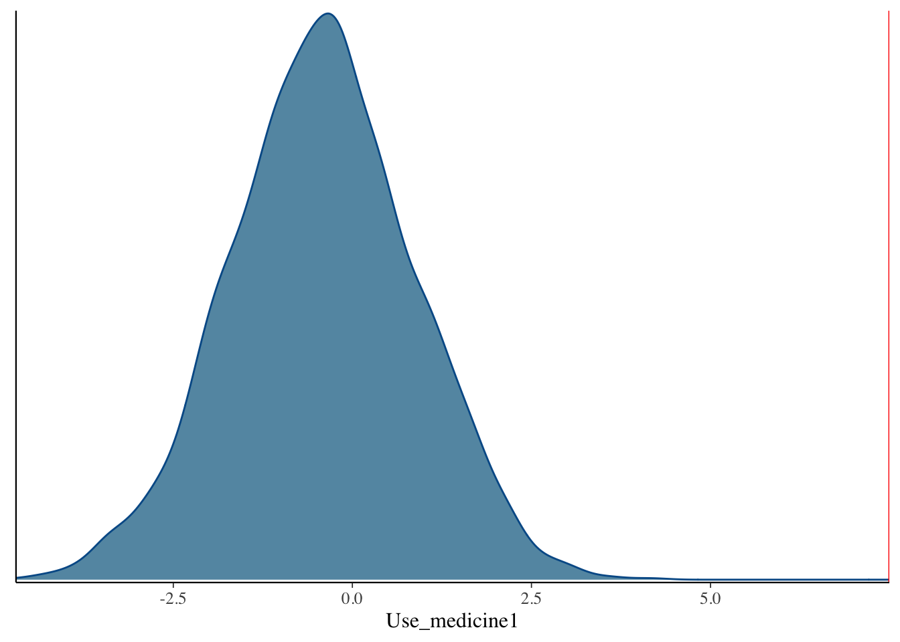
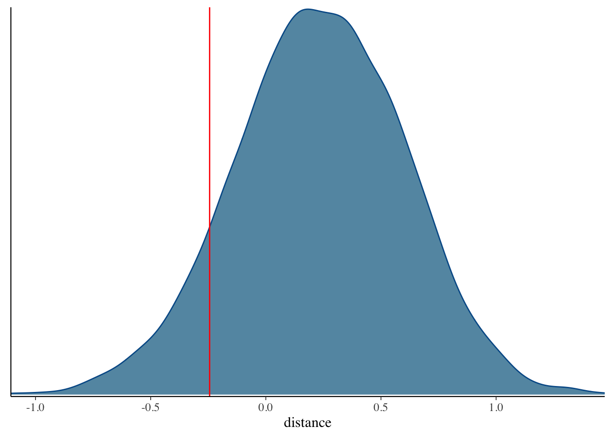

4 Bayesian regression
To fit a Bayesian regresion we use the function stan_glm from the rstanarm package. This function as the above lm function requires providing the formula and the data that will be used. The other arguments are:
family: by default this function uses the gaussian distribution as we do with the classical glm function to perform lm model.
prior: The prior distribution for the regression coefficients, By default the normal prior is used, set this to NULL for a flat uniform prior. For other prior options in rstanarm, see ?priors.
prior_intercept: prior for the intercept, can be normal, student_t , or cauchy. If we want a flat uniform prior we set this to NULL.
prior_aux: prior fo auxiliary parameters such as the error standard deviation for the gaussion family.
algorithm: The estimating approach to use. The default is "sampling MCMC1.
QR: FALSE by default, if true QR decomposition applied on the design matrix if we have large number of predictors.
iter : is the number of iterations if the MCMC method is used, the default is 2000.
chains: the number of Markov chains, the default is 4.
warmup: also known as ‘burnin,’ the number of iterations used for adaptation, and should not be used for inference. By default it is half of the iterations.
model_bayes <- stan_glm(medv~., data = bost, seed = 111)##
## SAMPLING FOR MODEL 'continuous' NOW (CHAIN 1).
## Chain 1:
## Chain 1: Gradient evaluation took 9.5e-05 seconds
## Chain 1: 1000 transitions using 10 leapfrog steps per transition would take 0.95 seconds.
## Chain 1: Adjust your expectations accordingly!
## Chain 1:
## Chain 1:
## Chain 1: Iteration: 1 / 2000 [ 0%] (Warmup)
## Chain 1: Iteration: 200 / 2000 [ 10%] (Warmup)
## Chain 1: Iteration: 400 / 2000 [ 20%] (Warmup)
## Chain 1: Iteration: 600 / 2000 [ 30%] (Warmup)
## Chain 1: Iteration: 800 / 2000 [ 40%] (Warmup)
## Chain 1: Iteration: 1000 / 2000 [ 50%] (Warmup)
## Chain 1: Iteration: 1001 / 2000 [ 50%] (Sampling)
## Chain 1: Iteration: 1200 / 2000 [ 60%] (Sampling)
## Chain 1: Iteration: 1400 / 2000 [ 70%] (Sampling)
## Chain 1: Iteration: 1600 / 2000 [ 80%] (Sampling)
## Chain 1: Iteration: 1800 / 2000 [ 90%] (Sampling)
## Chain 1: Iteration: 2000 / 2000 [100%] (Sampling)
## Chain 1:
## Chain 1: Elapsed Time: 0.072636 seconds (Warm-up)
## Chain 1: 0.101004 seconds (Sampling)
## Chain 1: 0.17364 seconds (Total)
## Chain 1:
##
## SAMPLING FOR MODEL 'continuous' NOW (CHAIN 2).
## Chain 2:
## Chain 2: Gradient evaluation took 1.1e-05 seconds
## Chain 2: 1000 transitions using 10 leapfrog steps per transition would take 0.11 seconds.
## Chain 2: Adjust your expectations accordingly!
## Chain 2:
## Chain 2:
## Chain 2: Iteration: 1 / 2000 [ 0%] (Warmup)
## Chain 2: Iteration: 200 / 2000 [ 10%] (Warmup)
## Chain 2: Iteration: 400 / 2000 [ 20%] (Warmup)
## Chain 2: Iteration: 600 / 2000 [ 30%] (Warmup)
## Chain 2: Iteration: 800 / 2000 [ 40%] (Warmup)
## Chain 2: Iteration: 1000 / 2000 [ 50%] (Warmup)
## Chain 2: Iteration: 1001 / 2000 [ 50%] (Sampling)
## Chain 2: Iteration: 1200 / 2000 [ 60%] (Sampling)
## Chain 2: Iteration: 1400 / 2000 [ 70%] (Sampling)
## Chain 2: Iteration: 1600 / 2000 [ 80%] (Sampling)
## Chain 2: Iteration: 1800 / 2000 [ 90%] (Sampling)
## Chain 2: Iteration: 2000 / 2000 [100%] (Sampling)
## Chain 2:
## Chain 2: Elapsed Time: 0.066555 seconds (Warm-up)
## Chain 2: 0.089514 seconds (Sampling)
## Chain 2: 0.156069 seconds (Total)
## Chain 2:
##
## SAMPLING FOR MODEL 'continuous' NOW (CHAIN 3).
## Chain 3:
## Chain 3: Gradient evaluation took 1.3e-05 seconds
## Chain 3: 1000 transitions using 10 leapfrog steps per transition would take 0.13 seconds.
## Chain 3: Adjust your expectations accordingly!
## Chain 3:
## Chain 3:
## Chain 3: Iteration: 1 / 2000 [ 0%] (Warmup)
## Chain 3: Iteration: 200 / 2000 [ 10%] (Warmup)
## Chain 3: Iteration: 400 / 2000 [ 20%] (Warmup)
## Chain 3: Iteration: 600 / 2000 [ 30%] (Warmup)
## Chain 3: Iteration: 800 / 2000 [ 40%] (Warmup)
## Chain 3: Iteration: 1000 / 2000 [ 50%] (Warmup)
## Chain 3: Iteration: 1001 / 2000 [ 50%] (Sampling)
## Chain 3: Iteration: 1200 / 2000 [ 60%] (Sampling)
## Chain 3: Iteration: 1400 / 2000 [ 70%] (Sampling)
## Chain 3: Iteration: 1600 / 2000 [ 80%] (Sampling)
## Chain 3: Iteration: 1800 / 2000 [ 90%] (Sampling)
## Chain 3: Iteration: 2000 / 2000 [100%] (Sampling)
## Chain 3:
## Chain 3: Elapsed Time: 0.067691 seconds (Warm-up)
## Chain 3: 0.092328 seconds (Sampling)
## Chain 3: 0.160019 seconds (Total)
## Chain 3:
##
## SAMPLING FOR MODEL 'continuous' NOW (CHAIN 4).
## Chain 4:
## Chain 4: Gradient evaluation took 1.1e-05 seconds
## Chain 4: 1000 transitions using 10 leapfrog steps per transition would take 0.11 seconds.
## Chain 4: Adjust your expectations accordingly!
## Chain 4:
## Chain 4:
## Chain 4: Iteration: 1 / 2000 [ 0%] (Warmup)
## Chain 4: Iteration: 200 / 2000 [ 10%] (Warmup)
## Chain 4: Iteration: 400 / 2000 [ 20%] (Warmup)
## Chain 4: Iteration: 600 / 2000 [ 30%] (Warmup)
## Chain 4: Iteration: 800 / 2000 [ 40%] (Warmup)
## Chain 4: Iteration: 1000 / 2000 [ 50%] (Warmup)
## Chain 4: Iteration: 1001 / 2000 [ 50%] (Sampling)
## Chain 4: Iteration: 1200 / 2000 [ 60%] (Sampling)
## Chain 4: Iteration: 1400 / 2000 [ 70%] (Sampling)
## Chain 4: Iteration: 1600 / 2000 [ 80%] (Sampling)
## Chain 4: Iteration: 1800 / 2000 [ 90%] (Sampling)
## Chain 4: Iteration: 2000 / 2000 [100%] (Sampling)
## Chain 4:
## Chain 4: Elapsed Time: 0.068043 seconds (Warm-up)
## Chain 4: 0.097402 seconds (Sampling)
## Chain 4: 0.165445 seconds (Total)
## Chain 4:Print the model with print function from base R (R Core Team 2021).
print(model_bayes, digits = 3)## stan_glm
## family: gaussian [identity]
## formula: medv ~ .
## observations: 506
## predictors: 4
## ------
## Median MAD_SD
## (Intercept) 32.834 2.285
## age -0.143 0.020
## dis -0.258 0.257
## chas1 7.543 1.432
##
## Auxiliary parameter(s):
## Median MAD_SD
## sigma 8.324 0.260
##
## ------
## * For help interpreting the printed output see ?print.stanreg
## * For info on the priors used see ?prior_summary.stanregThe Median estimate is the median computed from the MCMC simulation, and MAD_SD is the median absolute deviation computed from the same simulation. To well understand how getting these outputs let’s plot the MCMC simulation of each predictor using bayesplot
mcmc_dens(model_bayes, pars = c("age")) +
vline_at(-0.143, col = "red")
As you see the point estimate of age falls on the median of this distribution (red line). The same thing is true for dis and shas predictors.
mcmc_dens(model_bayes, pars=c("chas1")) +
vline_at(7.496, col="red")
mcmc_dens(model_bayes, pars=c("dis"))+
vline_at(-0.244, col="red")
Now how can we evaluate the model parameters? The answer is by analyzing the posteriors using some specific statistics. To get the full statistics provided by bayestestR package, we make use of the function describe_posterior.
describe_posterior(model_bayes)## Possible multicollinearity between dis and age (r = 0.76). This might lead to inappropriate results. See 'Details' in '?rope'.## Summary of Posterior Distribution
##
## Parameter | Median | 95% CI | pd | ROPE | % in ROPE | Rhat | ESS
## --------------------------------------------------------------------------------------------
## (Intercept) | 32.83 | [28.43, 37.24] | 100% | [-0.92, 0.92] | 0% | 1.002 | 2029.00
## age | -0.14 | [-0.18, -0.10] | 100% | [-0.92, 0.92] | 100% | 1.001 | 2052.00
## dis | -0.26 | [-0.76, 0.26] | 81.92% | [-0.92, 0.92] | 100% | 1.002 | 2115.00
## chas1 | 7.54 | [ 4.74, 10.44] | 100% | [-0.92, 0.92] | 0% | 1.000 | 3744.00Possible multicollinearity between dis and age (r = 0.75). This might lead to inappropriate results. See ‘Details’ in ?rope.
Before starting analyzing the table we should first understanding the above various statistics commonly used in Bayesian regression.
CI : Credible Interval, it is used to quantify the uncertainty about the regression coefficients. There are tow methods to compute CI, the highest density interval HDI which is the default, and the Equal-tailed Interval ETI. with 89% probability (given the data) that a coefficient lies above the CI_low value and under CI_high value. This strightforward probabilistic interpretation is completely diffrent from the confidence interval used in classical linear regression where the coefficient fall inside this confidence interval (if we choose 95% of confidence) 95 times if we repeat the study 100 times.
pd : Probability of Direction, which is the probability that the effect goes to the positive or to the negative direction, and it is considered as the best equivalent for the p-value.
ROPE_CI: Region of Practical Equivalence, since bayes method deals with true probabilities , it does not make sense to compute the probability of getting the effect equals zero (the null hypothesis) as a point (probability of a point in continuous intervals equal zero). Thus, we define instead a small range around zero which can be considered practically the same as no effect (zero), this range therefore is called ROPE. By default (according to Cohen, 1988) The Rope is [-0.1,0.1] from the standardized coefficients.
Rhat: scale reduction factor \(R^\), it is computed for each scalar quantity of interest, as the standard deviation of that quantity from all the chains included together, divided by the root mean square of the separate within-chain standard deviations. When this value is close to 1 we do not have any convergence problem with MCMC.
ESS : effective sample size, it captures how many independent draws contain the same amount of information as the dependent sample obtained by the MCMC algorithm, the higher the ESS the better. The threshold used in practice is 400.
Alternatively, we can get the coefficient estimates (which are the medians by default) separately by using the package insight.
post <- get_parameters(model_bayes)print(purrr::map_dbl(post,median),digits = 3)## (Intercept) age dis chas1
## 32.834 -0.143 -0.258 7.543As we see the values are closer to each other due to the like normality of the distribution of the posteriors where all the central statistics (mean, median, mode) are closer to each other. Using the following plot to visualize the age coefficient using different statistics as follows
mcmc_dens(model_bayes, pars=c("age"))+
vline_at(median(post$age), col="red")+
vline_at(mean(post$age), col="yellow")+
vline_at(map_estimate(post$age), col="green") As expected they are approximately on top of each other.
As expected they are approximately on top of each other.